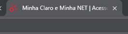

As tags semânticas são tags que possuem significado, ou seja, elas têm um significado para o navegador e para os mecanismos de busca. Elas são importantes para a acessibilidade e para o SEO (Search Engine Optimization).
Tags Semânticas e Não Semânticas
As tags com efeito semântico, como <header> e <article>, fornecem significado ao conteúdo, ajudando navegadores e mecanismos de busca a entenderem a estrutura e a importância das informações. Já as tags sem efeito semântico, como <div> e <span>, são usadas apenas para estilização e agrupamento de elementos, sem transmitir nenhum significado específico sobre o conteúdo.
As tags semânticas são:
<header>: Cabeçalho
<nav>: Navegação
<main>: Conteúdo principal
<article>: Artigo
<section>: Seção
<aside>: Lateral
<footer>: Rodapé
As tags não semânticas são:
<div>: Divisão
<span>: Span
<p>: Parágrafo
<a>: Link
<button>: Botão
<ul>: Lista não ordenada
<ol>: Lista ordenada
Elementos do Head
O head é a parte onde ficam todas as configurações iniciais de um HTML. Aqui declaramos configurações que fornecem informações importantes para os motores de busca, entre outras configurações.
<title>xxx</title>
A tag <title> define o título que será exibido na aba do navegador. Veja o exemplo abaixo:

Além disso, o título é um dos elementos mais importantes para os mecanismos de busca (SEO). Ele ajuda a determinar a relevância da página nos resultados de pesquisa. Veja como o título aparece nos resultados de busca:
Portanto, é essencial que o título seja descritivo e contenha palavras-chave relevantes para melhorar o ranqueamento da página.
Metatags
Metatags servem para fazermos as configurações do próprio documento no documento.
Charset
Essa configuração meta define qual padrão de caracteres usaremos em nossa página. No Brasil, devemos usar sempre o UTF-8, pois é o que engloba acentuações, til, cedilha, etc.
Quando usamos o charset errado, o navegador não interpreta esses caracteres e a página fica cheia de erros no texto.
O comando:
<meta charset="UTF-8">
Viewport
Essa meta pega a largura do navegador e adapta o conteúdo do site a essa largura, tornando o site mais responsivo.
A meta tag description é crucial para o SEO, pois ela define a descrição que aparece nos resultados de busca, logo abaixo do título do site. Veja o exemplo abaixo:
É importante criar uma descrição atraente e relevante para aumentar a chance de cliques no seu site. Veja como usar essa meta tag:
<meta name="description" content="Tudo que você precisa conhecer sobre tags semânticas do HTML5">
As três meta tags que vimos até agora (charset, viewport e description) são incluídas automaticamente quando iniciamos um documento HTML5 digitando "!". As próximas meta tags não são adicionadas por padrão, mas é uma excelente prática incluí-las em todos os sites que criarmos.
Keywords
Essa tag é responsável pelas palavras-chave que puxarão essa página para ser exibida no Google.
Essa e a meta description são técnicas diretamente ligadas a SEO e super importantes para um bom ranqueamento do site.
A meta tag author define o autor do documento. Embora não tenha um impacto direto no SEO, é uma boa prática incluí-la para fornecer informações adicionais sobre o autor do conteúdo.
<meta name="author" content="Seu Nome">
Robots
A meta tag robots é usada para controlar o comportamento dos mecanismos de busca em relação à indexação e ao seguimento de links na página. Ela pode ser usada para permitir ou impedir a indexação da página e o seguimento de links.
<meta name="robots" content="index, follow">
Canonical
A tag link rel="canonical" é usada para indicar a URL canônica de uma página. Isso ajuda a evitar problemas de conteúdo duplicado, informando aos mecanismos de busca qual é a versão principal da página.
Cabeçalho: A porta de entrada do site, a primeira coisa que o cliente vê ao carregar a página. Deve ser sempre bem feito.
Entretanto, é possível usar essa tag em article no meio da tag main ou section, dependendo da necessidade.
Main
Principal: É onde fica o conteúdo principal do site, o foco.
Footer
Rodapé: Uma das principais tags semânticas de uma página, pois define o local do rodapé e deixamos algumas informações que não possuem relação com o conteúdo principal.
Títulos
Os títulos são elementos de texto que indicam a importância de uma seção ou de um conteúdo específico. Eles são usados para estruturar o conteúdo da página e facilitar a leitura e a compreensão do usuário.
Os títulos são divididos em seis níveis de importância, de <h1> a <h6>. O <h1> é o mais importante e o <h6> é o menos importante. Eles são usados para organizar o conteúdo da página em seções e subseções, facilitando a navegação e a compreensão do usuário. Eles também são importantes para o SEO, pois os mecanismos de busca usam os títulos para determinar a importância daquele assunto na página.
Quando um usuário pesquisa por uma palavra-chave e seu título <h1> contém ou é exatamente essa palavra-chave, o mecanismo de busca tende a ranquear melhor sua página nos resultados. Isso ocorre porque o <h1> é considerado o título mais importante da página.
No entanto, não é recomendável usar <h1> em todos ou em muitos títulos na página. Os mecanismos de busca valorizam o <h1> porque ele deve representar o tema principal da página. Se você usar mais de um <h1>, a importância do título principal é diluída, prejudicando muito o ranqueamento. Então use apenas um h1 por página!
Nav
É como um contêiner que indica aos mecanismos de busca que todos os itens ali dentro são itens de navegação do site.
Article
Consulte o site MDN web docs para mais informações sobre essa e todas as outras tags semânticas.
Um dos elementos que mais geram confusão no uso. Essa tag foi criada no HTML5
Porém, as mais confusas são article e section. Tentando explicar article de forma simplificada: essa tag deve ser usada sempre que for um assunto independente. Essa é a palavra-chave para definir article: assunto independente.
Se você escreve um trecho do seu site e consegue retirá-lo dali e o site continua fazendo sentido, provavelmente está falando de um article.
Outra forma de identificá-lo é que o article geralmente vem com um título de alto valor dentro da página, como um <h1>, <h2> ou <h4>.
Section
Outro elemento que gera muita confusão na hora de criar um site.
Por mais que em teoria ele seja o oposto ao article, ele se confunde muito com o próprio article. A section deve ser sempre aquele trecho que pertence a algum outro trecho no site. Ela também vem acompanhada de títulos, porém de menor relevância, como um <h4> em diante.
A section como o próprio nome diz é uma seção uma parte semantica de um texto.
A section nunca deve ser usada no lugar de div, pois div não é semântica.
Diferenciando Article de Section
Imagine uma redação com título, introdução, desenvolvimento com três argumentos e conclusão. A introdução, o desenvolvimento e a conclusão são as três <section> da redação, enquanto o <article> seria a redação inteira, incluindo o título.
Agora, imagine um texto extenso. Esse texto também teria essas três <section>. Entretanto, os argumentos poderiam ser considerados <article> dentro do <article> principal, que seria o próprio texto, além de estarem na <section> de desenvolvimento.
Aside
É um assunto paralelo.
A tag <aside> é usada para definir um conteúdo que está relacionado ao conteúdo principal, mas que não é parte dele. Esse conteúdo é geralmente exibido em uma barra lateral ou em uma seção separada do conteúdo principal. Exemplos comuns de uso da tag <aside> incluem barras laterais com links para artigos relacionados, anúncios, biografias de autores, ou qualquer outro conteúdo que complemente o principal.
Outros exemplos estão os pdf de Professor Gustavo Guanabara sempre que aparece o personagem abaixo é um aside.
Tags de Menor Valor
<p>: Parágrafo
<button>: Essa tag diz que aquele link é um botão e é ótima para usar o CSS
<a>: Cria Hyperlinks para sites externos ou conteúdos internos
<ul>: Cria uma lista não ordenada
<ol>: Cria uma lista ordenada
As tags semânticas são essenciais para a estruturação e organização do conteúdo de uma página web. Elas fornecem significado ao conteúdo, facilitando a compreensão e a navegação do usuário, além de melhorar a acessibilidade e o SEO. Ao utilizar as tags semânticas corretamente, você estará criando páginas mais bem estruturadas, organizadas e otimizadas para os mecanismos de busca, o que contribuirá para uma melhor experiência do usuário e um melhor posicionamento nos resultados de pesquisa.
É importante lembrar que as tags HTML não se limitam apenas às mencionadas aqui. Existem muitas outras, cada uma com seu próprio grau de importância e funcionalidade. Conhecer e utilizar essas tags corretamente pode fazer uma grande diferença na estrutura e na acessibilidade do seu site.